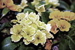
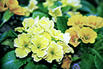

In ScanGear (scanner driver)'s Advanced Mode tab, click (Saturation/Color Balance).
 Note
NoteClick Defaults to reset all adjustments in the current window.
Adjust the image's saturation (vividness). You can brighten colors that have faded with time, etc.
Move (Slider) under Saturation to the left to decrease the saturation (darken the image), and to the right to increase the saturation (brighten the image). You can also enter a value (-127 to 127).
Saturation decreased |
Original image |
Saturation increased |
|  |
NoteThe natural color tone of the original image may be lost if you increase saturation too much.
Adjust images that have a colorcast. "Colorcast" is a phenomenon where a specific color affects the entire picture due to the weather or ambient strong colors.
Move (Slider) under Color Balance to the left or right to emphasize the corresponding color.
Cyan & Red
Magenta & Green
Yellow & Blue
These are complementary color pairs (each pair produces a shade of gray when mixed). You can reproduce the natural colors of the scene by reducing the cast color and increasing the complementary color.
It is usually difficult to correct the image completely by adjusting only one color pair. It is recommended that you find a portion in the image where it should be white, and adjust all three color pairs so that the portion turns white.
You can also enter a value (-127 to 127).
Below is an example of an image in which the "Cyan & Red" pair has been adjusted.
Cyan is increased |
Red is increased |
|  |